AMBER¶
AMBER 由 AmberTools 开源工具集与商业模拟引擎组成，依托专用力场，完成生物大分子‑小分子体系建模、动力学模拟、自由能计算，用于分子模拟与计算机辅助药物研究。
版本：24
安装路径：/opt/app/amber/24
操作步骤： 1、进入 AMBER 安装目录，确认目录存在。
1 | |
证明：命令返回 /opt/app/amber/24，说明 AMBER 安装目录存在。

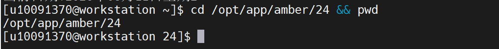
2、加载 AMBER 运行所需基础环境。
1 2 3 4 | |
证明：环境加载过程中 oneAPI 输出 oneAPI environment initialized，说明基础运行环境已加载完成。

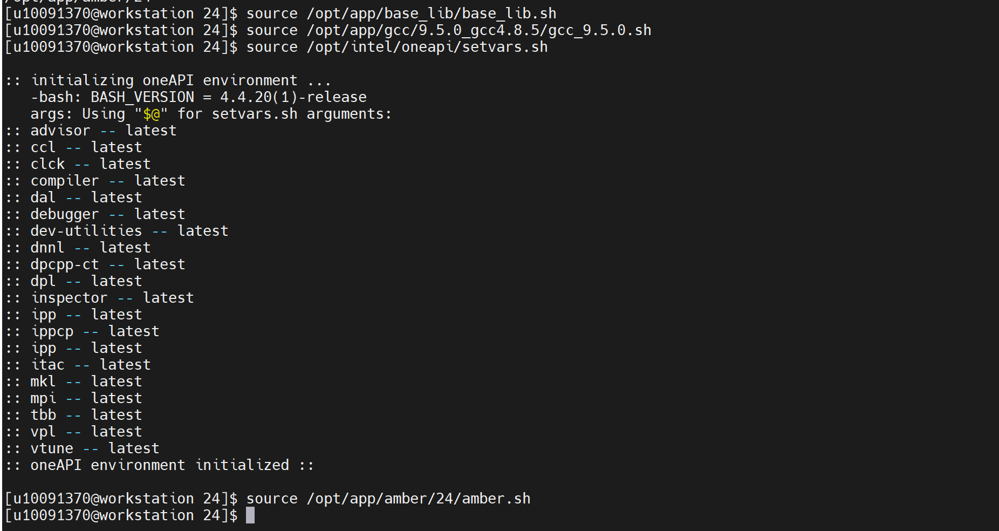
3、补充 AMBER 运行所需动态库路径，解决相关依赖库加载问题。
1 | |
证明：动态库路径配置完成，为后续 sander、pmemd 等程序运行提供依赖环境。

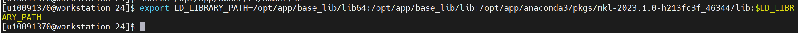
4、确认 sander 主程序是否已加入环境变量。
1 | |
证明：返回 /opt/app/amber/24/bin/sander，说明 sander 主程序可识别。

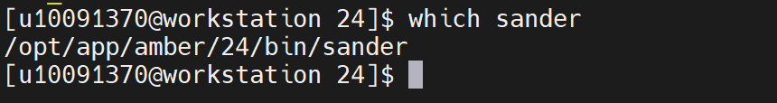
5、确认 pmemd 主程序是否存在。
1 | |
证明：返回 /opt/app/amber/24/bin/pmemd，说明 pmemd 主程序可识别。

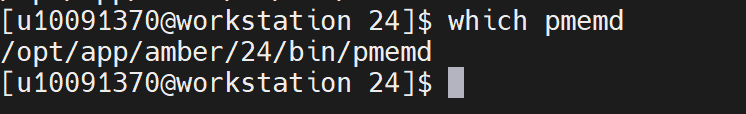
6、启动 sander 并查看用法信息，验证程序能否正常启动，不执行正式计算。
1 | |
证明：返回 mdfil: Error unknown flag: -h 以及 usage 等用法信息，说明 sander 主程序已被调用，并能输出命令用法信息。该提示表示 sander 不支持 -h 参数，但程序本身可正常启动。

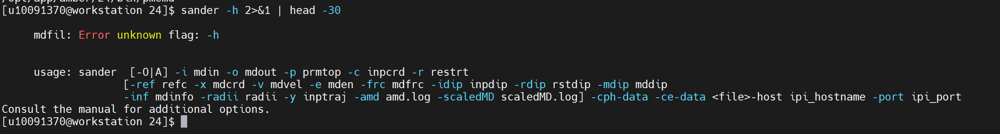
7、切换到用户家目录，避免在安装目录下产生只读目录写入问题。
1 | |
证明：已进入用户目录，后续验证文件和计算结果均在用户目录下生成，不影响安装目录。

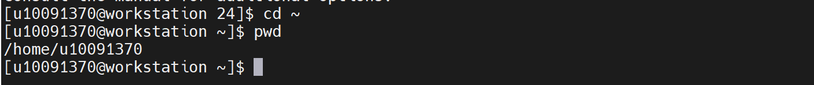
8、启动 pmemd，验证 pmemd 主程序是否能够正常启动。
1 | |
证明：程序能够启动并提示 Unit 115 Error on OPEN: mdin，是因为未提供 mdin 输入文件导致的正常提示，说明 pmemd 主程序已被成功调用；该步骤仅用于主程序打开验证，不代表正式计算失败。

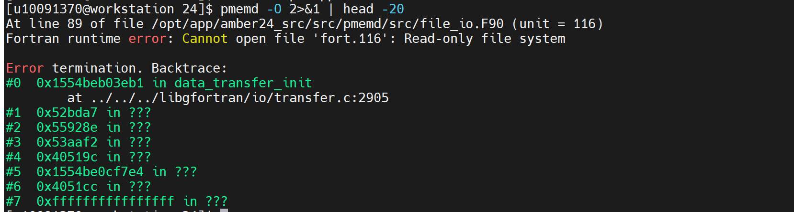
验证步骤： 9、确认 AMBER 分子动力学验证算例压缩包是否存在。
1 | |
证明：返回 /home/share/验证示例文件/1734396102-622540-amber-demo.zip，文件大小约 108K，说明验证算例文件存在。

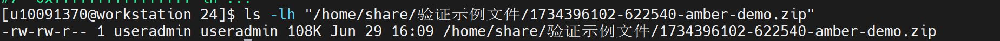
10、解压 AMBER 分子动力学验证算例到用户目录。
1 2 3 4 5 | |
证明：解压后生成 /home/useradmin/amber_validation/amber_demo 目录，说明验证算例已准备完成。

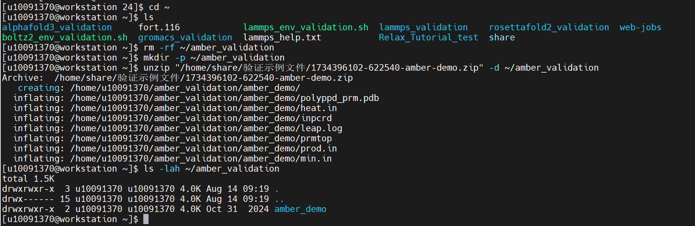
11、进入 AMBER 验证算例目录，并查看输入文件。
1 2 3 | |
证明：pwd 返回 /home/useradmin/amber_validation/amber_demo；目录中存在 min.in、heat.in、prod.in、prmtop、inpcrd、polyppd_prm.pdb 等文件，说明 AMBER 计算输入文件完整。

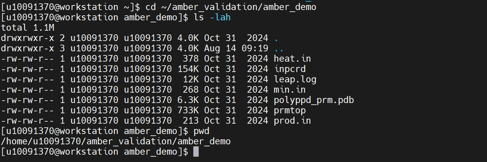
12、查看原始最小化输入文件参数。
1 | |
证明：min.in 中包含 imin=1、maxcyc=2000、ntpr=100、cut=8.0 等参数，说明该文件为 AMBER 能量最小化输入文件。

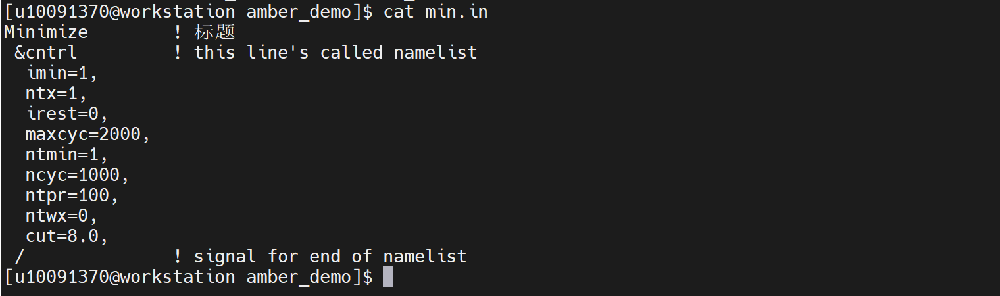
13、运行 AMBER 原始最小化算例，验证程序能否读取输入文件并执行计算。
1 | |
证明：运行后生成 min.out 和 min.rst 文件，说明 sander 能够读取 min.in、prmtop、inpcrd 输入文件并执行能量最小化计算。

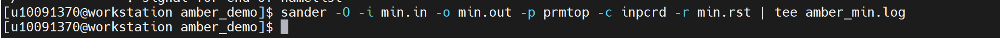
14、查看原始最小化计算结果文件。
1 2 | |
证明：返回结果中出现 min.out 和 min.rst；min.out 中出现 NSTEP、ENERGY、RMS、GMAX、BOND、ANGLE、DIHED、VDWAALS、EEL 等计算信息，说明 AMBER 已实际执行能量最小化计算。

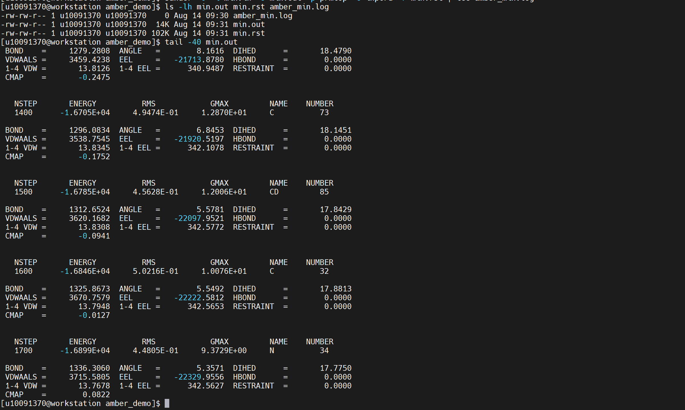
15、创建短周期最小化验证输入文件，用于快速完成验证。
1 2 3 4 5 6 7 8 9 10 11 12 13 14 | |
证明：生成 min_validate.in 文件，设置 maxcyc=100，用于 AMBER 短周期能量最小化验证。

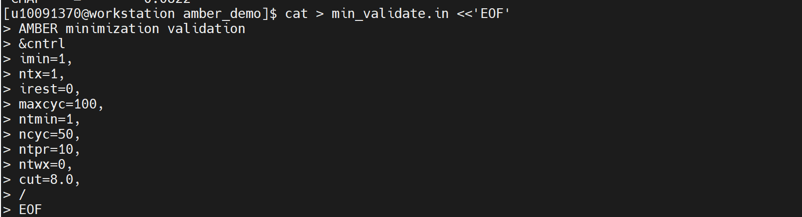
16、运行 AMBER 短周期能量最小化验证。
1 | |
证明：程序执行完成后生成 min_validate.out 和 min_validate.rst，说明 AMBER 能够正常完成短周期能量最小化计算。

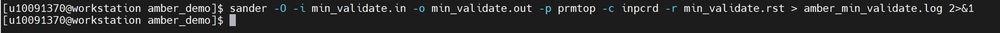
17、查看短周期验证结果文件。
1 2 | |
证明：返回结果中出现 min_validate.out 和 min_validate.rst；min_validate.out 中出现 NSTEP 100、ENERGY、RMS、GMAX 等计算结果，说明最小化计算执行到设定步数。

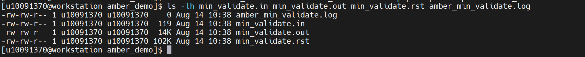

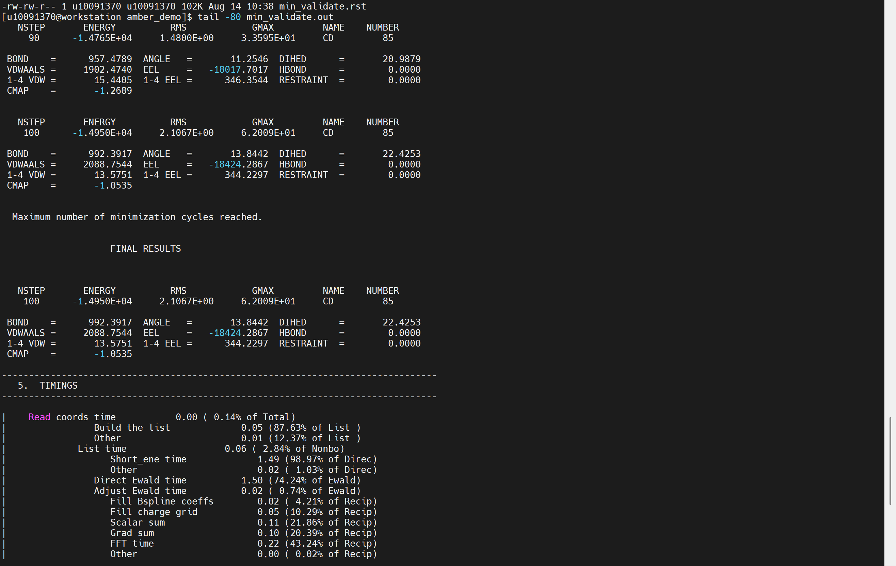
18、检查最终结果和异常信息。
1 2 | |
证明：第一条命令能够检索到 FINAL RESULTS、TIMINGS、Total time、Run done、wallclock 等信息，说明 AMBER 短周期能量最小化任务正常完成；第二条命令排除了 TESTING RELATIVE ERROR 这类正常精度测试信息后，未发现 fatal、terminated、segmentation、abort 等异常报错，说明验证过程中未发现运行异常。

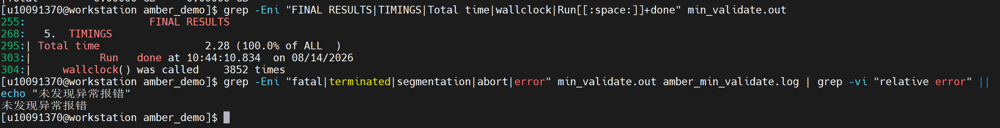